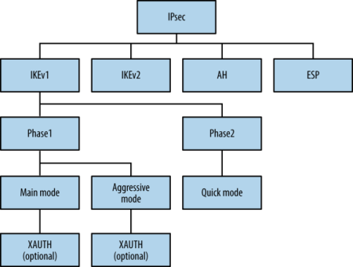

# Port 500 - isakmp (UDP)
## About isakmp
isakmp stands for
Internet Security Association and Key Management Protocol.
The
Internet Key Exchange (IKE) is used to authenticate IPsec (VPN) connections.
And the
Security Association defines the cryptographic keys used for connection.
With those 2 together, port 500 is used to authenticate VPN connections.
ISAKMP - the
Internet Security Association and Key Management Protocol service - supports IKE and is exposed via UDP port 500.
### IKEv1
IKE involves a two-phase process to define an IPsec SA:
• The 1st phase authenticates the peers and establishes an ISAKMP SA
◇ used to protect phase two messages
• the 2nd phase establishes an IPsec SA
◇ used to encrypt data
• there's also potentially a 3rd phase called XAUTH which supports user authentication
IKE v1 has exploitable flaws.### IKEv2
IKEv2 addresses the flaws in IKEv1 by condensing the 2 phases into a 1 single set of messages.
Relationship of IPsec protocol components - IKE, IKEv2, XAUTH, AH, and ESP ## Checklist
• Assess IKE
◇
nmap -p 500 -sU -sV -sC 10.10.10.116 ◇ Identify IPsec servers -
ike-scan -M 10.10.10.116• Check version for exploits
• Assess with transform set
◇
-a Old way -
ike-scan -M -a 5,2,1,2 -o 10.10.10.116
◇
--trans New way -
ike-scan -M --trans="(1=5,2=2,3=1,4=2)" -o 10.10.10.116• Try to connect using strongSwan IPsec VPN implementation
## Ike Transform Set
IKE transform fields and common values are as follows:• Encryption algorithms
◇ 1 (DES), 5 (3DES), 7/128 (AES-128), and 7/256 (AES-256)
• Integrity algorithms (hash type)
◇ 1 (MD5) and 2 (SHA-1), 4 (SHA-256), 5 (SHA-384), and 6 (SHA-512)
• Authentication methods
◇ 1 (PSK), 3 (RSA), and 65001 (XAUTH)
• DH groups
◇ 1 (768-bit), 2 (1,024-bit), and 5 (1,536-bit), 14 (2,048-bit), and 15 (3,072-bit)
ike-scan -M -a 5,2,1,2 -o 10.10.10.116ike-scan -M --trans="(1=5,2=2,3=1,4=2)" -o 10.10.10.116Connect using strongSwan
Refere to strongSwan sub-node